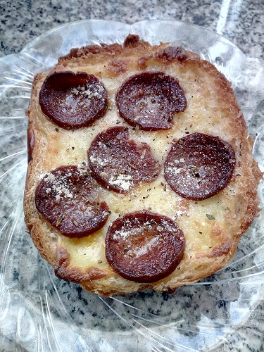

Sucuk Ekmek

Description:
My favourite lazy food is Sucuk Ekmek.
Sucuk means soudjouk in Turkish and
Ekmek means bread but we'll be using
a burger bun for this food.
Because this is my ultimate lazy food,
i don't want to do a lot of cooking.
Ingredients:
- A burger bun
- 3-4 slices of kashar cheese
- 5-6 slices of soudjouk
- Salt (If preferred)
- Pizza seasoning
- Garlic powder
Steps:
- Slice the bun in the middle horizontally.
- Place the sliced kashar cheese evenly on the bun.
- Place the sliced soudjouk on top of the cheese.
- Heat your oven at 200 celcius for five minutes.
- Cook the sucuk ekmek for ten to twelve minutes.
- Season it with pizza seasoning and garlic powder and with some salt if you prefer.
Voila! Enjoy your crispy sucuk ekmek!